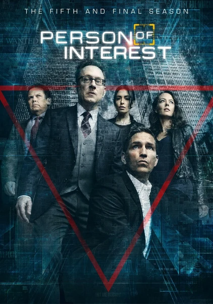

Сериал · 2011 · Драма, ИИ
Гениальный программист Гарольд Финч создает для государства «Машину» — систему, предсказывающую теракты на основе данных слежки. Есть нюанс: она фиксирует и обычные преступления, но правительство интересуют лишь масштабные катастрофы, поэтому информация о прочих угрозах остается без внимания. Финч нанимает бывшего спецагента Джона Риза, и вместе они начинают спасать людей, чьи номера система отнесла к категории «некритичных». Сериал, начинавшийся как процедурал, со временем перерос в одну из самых серьезных научно-фантастических историй об искусственном интеллекте, затрагивающую темы тотальной слежки, свободы воли и противостояния двух разумов.
Genius programmer Harold Finch builds the state 'the Machine' — a system that predicts terrorist acts from surveillance data. The catch: it also sees ordinary crimes, but the government only cares about 'catastrophes', so the irrelevant numbers go nowhere. Finch hires former agent John Reese, and they start saving the 'non-catastrophic' numbers. A series that began as a procedural and grew into one of the most serious sci-fi works about AI: surveillance, free will and two rival minds.
← Вернуться в каталог IT Movies